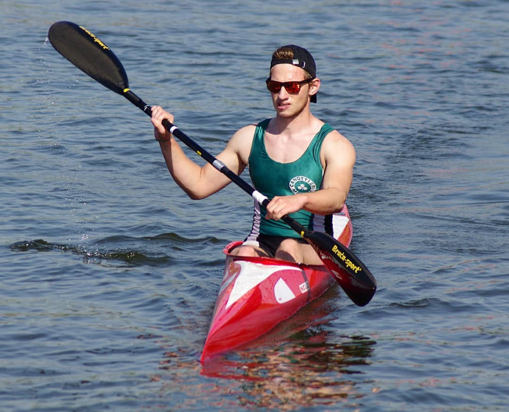
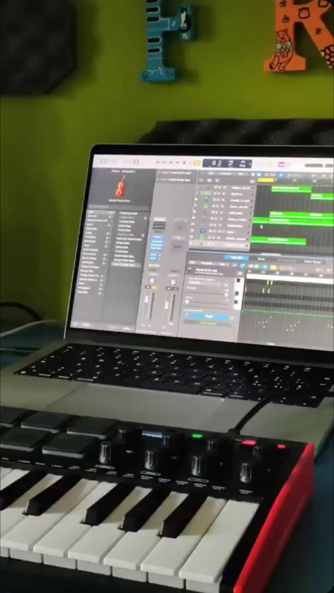
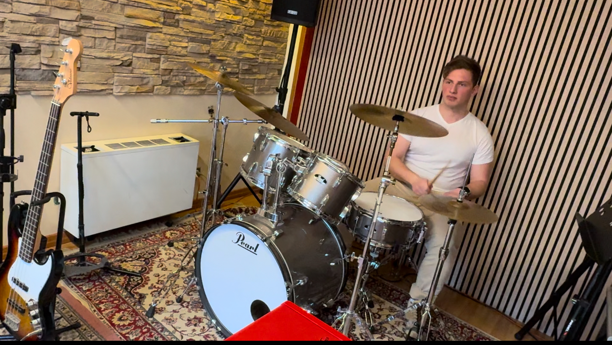
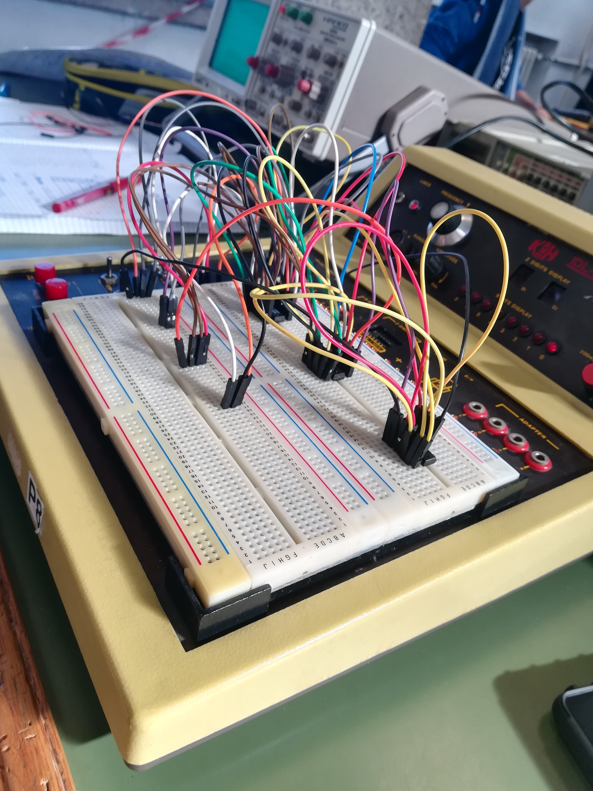
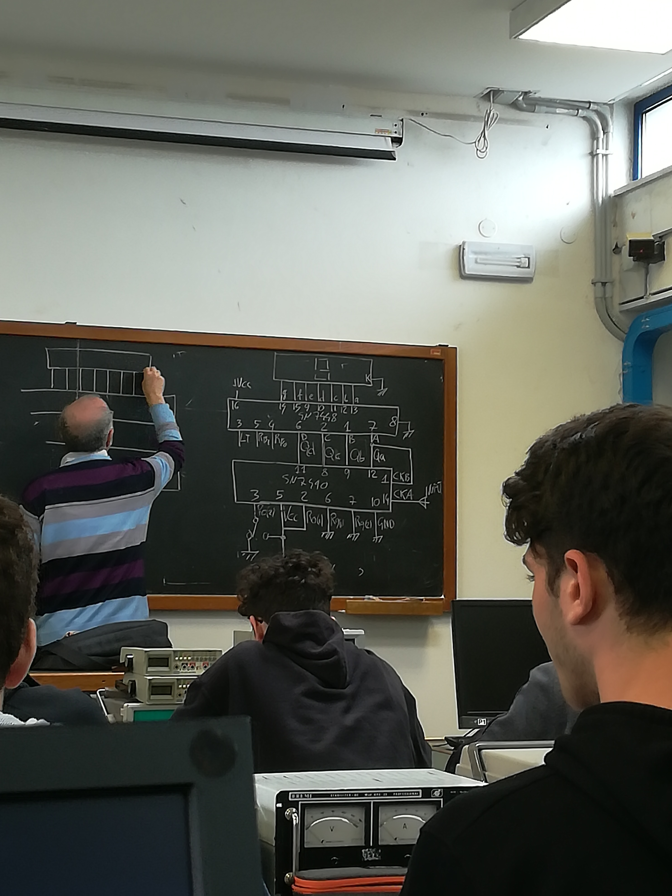

Who is Francesco Russo?
Who am I? Perhaps the most difficult and easiest question to answer in a few lines. I am a big dreamer or maybe a very optimistic person in life. I am a curious person, about every aspect of things, I always like to learn new things. Starting with the basics: I am a sportsman, in fact i competed in kayaking for 10 years of my life, now I am very busy with university and I am devoting most of my time to study... Kayaking has given me a lot. I've learnt to work hard for something that you love and i've learnt to get up when things get hard and you want to stop. I grew up in an health ambience and I will never stop thanking the sport for shaping me into who I've become. Everything has an end and every end is a new chapter in life. However, I don't miss a chance to run or go to the gym to keep fit.
Another thing that i must mention to sum up who i am is the fact that i'm a huge music lover, i love everything about music: listening, composing, studing, playing... I studied drums from the age of 10 to 13 and i learned to play piano self-taught (also thanks to my sister). I recently bought a guitar and a bass and i'm exited to learn how to play them! Last year I was able to buy with my own money a macbook and logic pro, a dream.
 Since I was young, with my first Windows XP desktop, I have had a great curiosity for the IT world. I was obsessed with knowing how a computer works. As I grew, during high school, I attended an IT institute where I developed a passion for mathematics and computer science.
 It led me to enroll at the University of Padua in the Computer Engineering course at the end of high school. Fortunately, throughout my education, I have never had problems with indecision about which school to choose, and university was no exception. While studying, between my first and second years at university, I also worked in a company as a back-end programmer.


Work in progress...